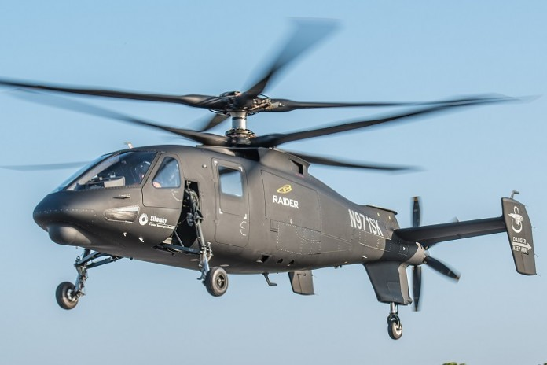
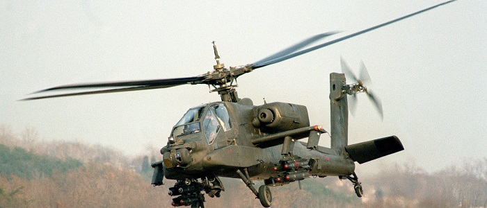
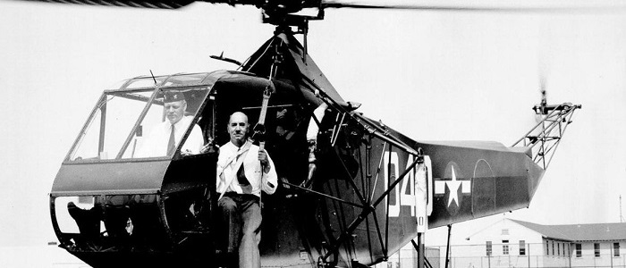

|
|
HELİKOPTERİN İCADI Tarihte yapılmış icatlardan hemen hepsi insanlığın yararına olmuştur. Bunlardan biri de savaşlarda ve birçok alanda kullanılan, zamandan kazanç sağlamamıza yarayan helikopterdir. Bu icadı bulup insanlığın yararına sunan kişi ise, İgor İvanovich Sikorsky olmuştur.  Helikopter icat edildiğinden bu yana insanların birçok alanda kullandığı bir araçtır. Kapladığı alanın küçük olması, hemen hemen her yere rahatlıkla girebilmesi ve iniş kalkışlardaki pratikliğinden dolayı uçaktan daha çok tercih edilmektedir. Yapıları ve boyutları uçaklardan küçüktür ama çalışma mekanizmaları oldukça karışık, üretim maliyetleri ise yüksektir. Helikopterleri uçaklardan ayıran en önemli özellik kendi eksenleri etrafında dönebilmeleri, geri geri uçabilmeleri ve havada asılı durabilmeleridir. Uçaklarda havada asılı durmayı kanatlar, ona da gerekli gücü motor sağlar. Helikopterlerde ise bu işlemi motora bağlı olan pervaneler yapmaktadır. Bu yüzden pervanelerin oldukça güçlü ve dayanıklı olması gerekmektedir. Ek olarak pervanelerin birbirine olan açılarının da sabit olması şarttır.Aksi takdirde helikopter havada hareketsiz bir şekilde duramadığından dengeyi de sağlayamayacaktır. Helikopter icat edilip insanlığa kazandırıldığı ilk günden bu yana çok önemli işler başarmıştır. Özellikle ikinci dünya savaşında kullanılmasının ardından askeri alanda da kullanımı yaygınlaşmış ve ileri teknolojide savaş uçakları üretilmiştir.  Helikopter dikine havalanabilen, döner kanatları olan, havada sabit bir noktada hareketsiz kalabilen, uçağın basit halidir. Havada durmasını sağlayan kaldırma kuvveti aracın üzerinde düşey bir eksen etrafında yatay olarak dönen bir rotora bağlı pervaneler aracılığıyla sağlanır. Pervane kollarına pal denir, paller açılı olarak konumlandırılmıştır. Oldukça sabit bir şekilde çalışan motorlarının yanı sıra, yüksek manevra kabiliyeti ve iniş kalkışlarda özel bir piste gerek duymamasından dolayı birçok alanda fazlası ile tercih edilmektedir. Üretiminin gerçekleşmesinden bu yana yolcu taşımacılığında tercih edilmemiştir. Daha çok savaş, gezi, keşif gibi alanlarda kullanılmaktadır. Bunun yanı sıra orman yangınları gibi büyük yangınları söndürmek için de helikopterlerden faydalanılır. Aynı zamanda, son yıllarda hasta taşımacılığı amacı ile de kullanılmaya başlanmış ve oldukça işlevsel olarak sağlık sektörüne de hizmet etmektedir. İnsan hayatında büyük kolaylık sağlayan helikopterlerin savaş versiyonlarının üretimi de bir hayli fazladır. Birçok çeşidi olan savaş helikopterleri neredeyse her ülkenin askeri müdahalelerinde aktif olarak kullanılır. Geniş bir tarihi olan helikopterlerin günümüzde daha gelişmiş ve üzerinde çalışılmış türlerini görebiliriz. 16 yy.da Leonardo da Vinci helikopterin temel ilkelerini araştırmış, 18 yy. da Paucton kas gücüne dayanan ilkel helikopteri tasarlamıştır. İlk olarak havada uçabilen motorlu helikopterin yapımı ise 20. yy içerisinde olmuştur. İlk motorlu helikopter olan bu araç, daha sonraki yıllarda geliştirilmeye devam edilmiş ve günümüze kadar farklı çeşit ve işlevlerde kullanılmak üzere pek çok helikopter üretimi sağlanmıştır. Birçok yerde kullanımı gerçekleştiği gibi farklı biçimlerde ve amaca uygun olarak da çok sayıda helikopter üretimi yapılmıştır. Yüz yılı aşkın süreden beri gerçekleşen en büyük icatlar arasında yerini alır. Bunun yanı sıra kullanım amacına uygun olarak insan hayatında pek çok şeyi de kolaylaştırmayı başardığı için, her alanda helikopterler vazgeçilmez hale gelmiştir. Helikopter ilk olarak icat edildiğinde de günümüzdeki formlarındaki gibiydi. Daha sonra da fazla değişiklik almadan üretimi devam etmeye başladı. Helikopterin ön kısmında kullanım merkezi ve arka kısmında birkaç kişiyi alabilecek kapasitede yer bulunur. Bunun yanı sıra savaş helikopteri olarak üretilen modeller daha çok kişiyi taşıyabilmek amacı ile tasarlanmıştır. Helikopter Yunancada heliko pteron yani hareketli kanatlar anlamına gelir. İlk helikopter üretimi 1907 yılında gerçekleşmiştir. Üretimi gerçekleşmiş olduğu yıl, tek bir helikopter türü oluşturulmuş ve bunun üzerinde çalışmalar yapılmaya başlanmıştır. Henüz çok gelişmiş olmadığı için belli başlı alanlarda kullanılmaya başlanmış ve daha çok savaşlar içerisinde iş görür hale gelmiştir. Zamanın savaş helikopterlerinin üretimi de, bu verimli kullanımın üzerine sonraki yıllarda artmıştır. Daha sonraki zamanlarda iyice geliştirilerek farklı sektörlerde de helikopter kullanımı başlamıştır. Günümüzde çeşitli sayıda ve özellikte helikopter bulabilmek mümkündür. Tek rotorlu ve çift rotorlu olarak ikiye ayrılan helikopterlerin, tasarım ve büyüklük olarak da birbirinden ayrıldığını görebiliriz.  |
||
| © 2017 nekibu - Designed by Osman Koç |

|